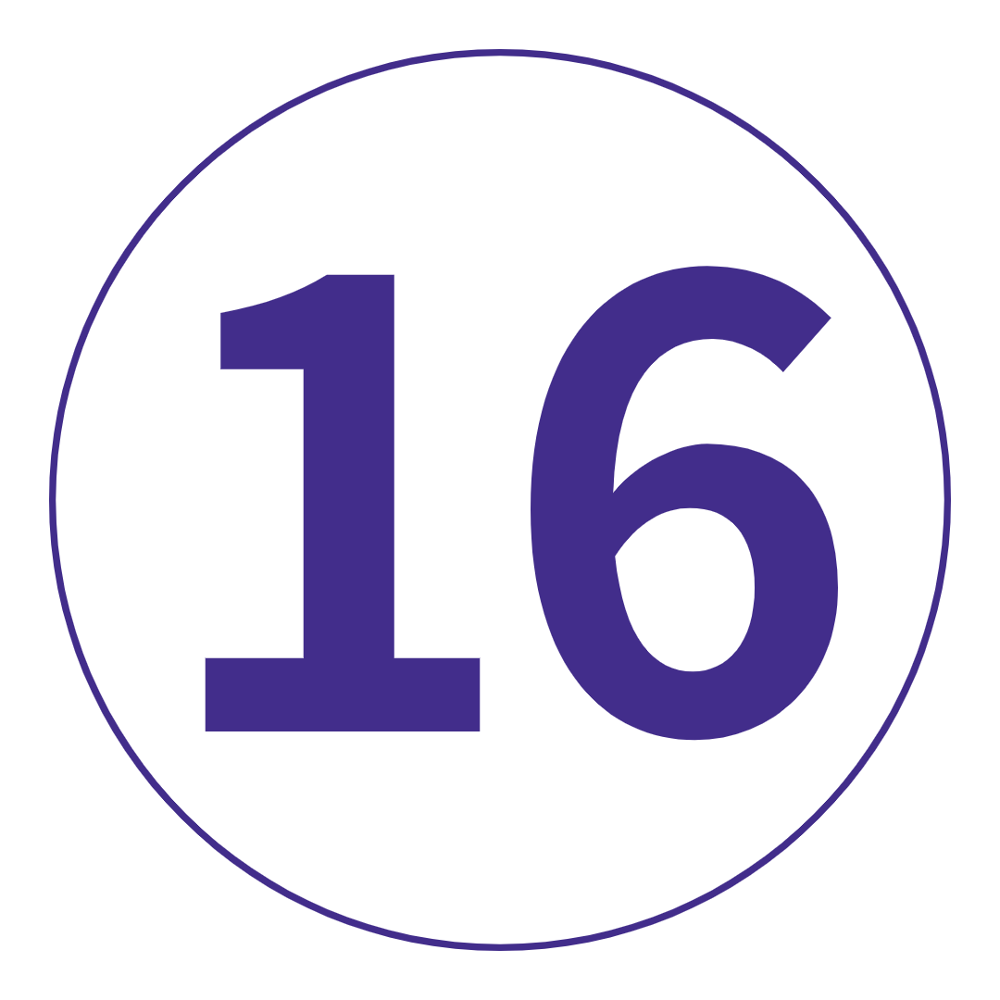
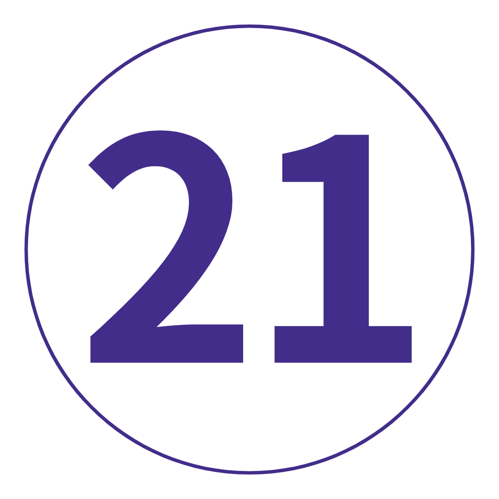
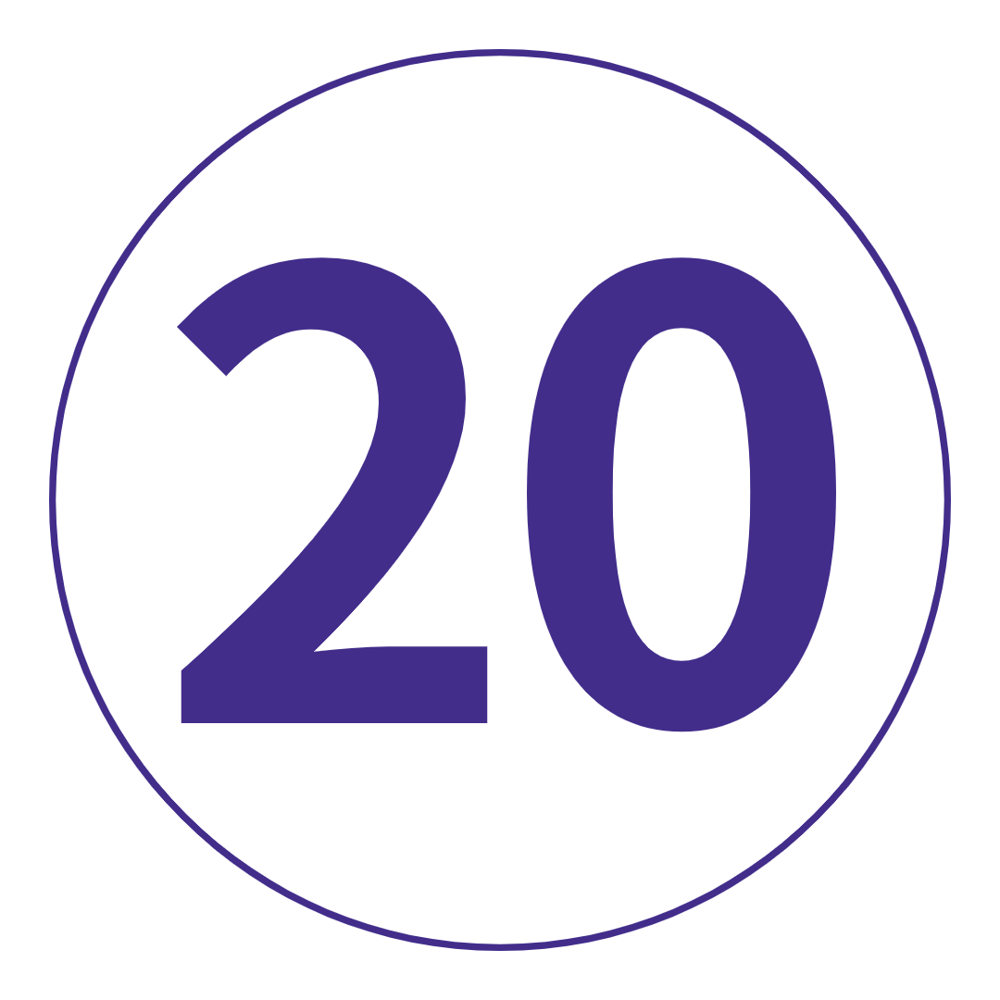

여행 개요
지 도
TRIP VIBE = 현지 여행 리더와 함께하는 상징적인 명소와 심도 있는 모험.
1. 영국. 2. 아일랜드 공화국. 3. 북아일랜드. 4. 스코틀랜드. 5. 웨일즈.
다섯 개의 믿을 수 없는 국가가 모두 행성의 작은 구석에 모여 있습니다. 그리고 무엇을 추측? 각 지역은 고유한 문화, 언어, 억양,
음식 및 사실로 가득 차 있습니다. 의미? 이 모든 것을 이해하려면 전문가의 도움을 받아야 합니다. 운이 좋게도 몇 가지 준비되어 있습니다. 준비가 되었나요?
여행 일정
-
 영국 런던
어느 순간 당신은 매일의 일상에 갇히게 되고, 다음 순간 당신은 런던 타운에서 100% 다르지만 100% 같은 사람들을 만납니다. 특별함을 발견할 준비가 되셨습니까? 우리도. 우리는 첫 번째 포함된 그룹 저녁 식사와 함께 좋은 시간을 시작할 것입니다. 가장 이상한 영국 사실에 대한 보너스 포인트(참고로 이곳에서 연어를 잡고 수상쩍은 모습을 보이는 것은 불법입니다. 새로운 저녁 계획을 세울 시간입니다).
영국 런던
어느 순간 당신은 매일의 일상에 갇히게 되고, 다음 순간 당신은 런던 타운에서 100% 다르지만 100% 같은 사람들을 만납니다. 특별함을 발견할 준비가 되셨습니까? 우리도. 우리는 첫 번째 포함된 그룹 저녁 식사와 함께 좋은 시간을 시작할 것입니다. 가장 이상한 영국 사실에 대한 보너스 포인트(참고로 이곳에서 연어를 잡고 수상쩍은 모습을 보이는 것은 불법입니다. 새로운 저녁 계획을 세울 시간입니다).
키워드 저녁 -
 런던에서 옥스퍼드 경유 리버풀위로 올라가서 - 길을 나서 첫 번째 중지인 옥스포드로 펌핑할 시간입니다. 믿을 수 없는 대학 주변을 도보로 둘러보며 해리 포터의 실제 모습을 확인하세요. Carfax Tower에서 전망을 만끽하세요. 그리고 동네 술집에서 점심을 먹습니다. 그런 다음: 리버풀로 향하는 트랙을 만들 것입니다. 우리가 잘 아는 Trip Leader가 Tate 리버풀, Maritime Museum, Albert Docks 및 The Beatles 박물관(물론)과 같은 명소를 확인하기 위해 단독으로 출발하기 전에 마을 주변을 안내할 것입니다. 저녁 식사는 오늘 밤 당신에게 달려 있습니다. 전체 Liverpudlian 분위기를 위해 우리는 당신이 scouse 스튜를 사냥한다고 생각합니다.
런던에서 옥스퍼드 경유 리버풀위로 올라가서 - 길을 나서 첫 번째 중지인 옥스포드로 펌핑할 시간입니다. 믿을 수 없는 대학 주변을 도보로 둘러보며 해리 포터의 실제 모습을 확인하세요. Carfax Tower에서 전망을 만끽하세요. 그리고 동네 술집에서 점심을 먹습니다. 그런 다음: 리버풀로 향하는 트랙을 만들 것입니다. 우리가 잘 아는 Trip Leader가 Tate 리버풀, Maritime Museum, Albert Docks 및 The Beatles 박물관(물론)과 같은 명소를 확인하기 위해 단독으로 출발하기 전에 마을 주변을 안내할 것입니다. 저녁 식사는 오늘 밤 당신에게 달려 있습니다. 전체 Liverpudlian 분위기를 위해 우리는 당신이 scouse 스튜를 사냥한다고 생각합니다.
키워드 아침 + 옥스포드 도보여행 + 리버풀 도보여행 -
 리버풀-요크 리버풀에 작별 인사를 하고 중세 성벽 도시 요크로 출발합니다. 수세기의 역사. '거룩한 sh*t' 가치가 있는 대성당. 그리고 꽤 멋진 술집. 우리는 도보 여행을 통해 York의 누구인지 알게 될 것입니다. 나머지는 귀하에게 달려 있습니다. 요크 민스터 타워로 올라가 JORVIK 바이킹 센터를 방문하거나 탐험가 모드에 참여하고 섐블즈와 스니클웨이를 따라 길을 잃습니다. 오늘 밤, York Roast Co.를 찾아 저녁 식사로 Yorkshire Roast 랩을 맛보십시오. 너무 틀리다, 맞다.
리버풀-요크 리버풀에 작별 인사를 하고 중세 성벽 도시 요크로 출발합니다. 수세기의 역사. '거룩한 sh*t' 가치가 있는 대성당. 그리고 꽤 멋진 술집. 우리는 도보 여행을 통해 York의 누구인지 알게 될 것입니다. 나머지는 귀하에게 달려 있습니다. 요크 민스터 타워로 올라가 JORVIK 바이킹 센터를 방문하거나 탐험가 모드에 참여하고 섐블즈와 스니클웨이를 따라 길을 잃습니다. 오늘 밤, York Roast Co.를 찾아 저녁 식사로 Yorkshire Roast 랩을 맛보십시오. 너무 틀리다, 맞다.
키워드 아침 + 요크 도보여행 -
 요크에서 스코틀랜드 에든버러까지 거짓말은 없습니다. 오늘은 운전을 하는 날입니다. 하지만 도중에 몇 가지 멋진 정류장이 있습니다. 첫째, 북쪽의 천사 아래에서 날개를 펼치십시오. 그런 다음: 122년에 로마인의 삶이 어땠는지 살펴보고 하드리아누스의 성벽을 따라 잠시 들러보세요. 하우스스테드 로만 포트(Housesteads Roman Fort)의 막사 블록을 거닐고 요새에서 360도 전망을 감상한 후 안윅 성(Alnwick Castle)으로 올라갑니다. Potterheads는 먼저이 장소를 인식하지만 Northumberland 공작의 집은 Robin Hood와 Downton Abbey에서도 사용되었습니다. 국경을 넘어 보니 스코틀랜드(Bonnie Scotland)로 들어가기 전에 내부를 돌아다니거나 카페에서 점심을 먹을 자유 시간이 있습니다. 에든버러에서의 저녁 식사는 우리의 몫입니다. 선택적인 야간 유흥 투어를 위해 갱단을 모으기 전에 풍성한 펍 잔치로 배를 채우십시오. 도시의 바 장면이 과대 광고에 부합하는지 확인할 시간입니다.
요크에서 스코틀랜드 에든버러까지 거짓말은 없습니다. 오늘은 운전을 하는 날입니다. 하지만 도중에 몇 가지 멋진 정류장이 있습니다. 첫째, 북쪽의 천사 아래에서 날개를 펼치십시오. 그런 다음: 122년에 로마인의 삶이 어땠는지 살펴보고 하드리아누스의 성벽을 따라 잠시 들러보세요. 하우스스테드 로만 포트(Housesteads Roman Fort)의 막사 블록을 거닐고 요새에서 360도 전망을 감상한 후 안윅 성(Alnwick Castle)으로 올라갑니다. Potterheads는 먼저이 장소를 인식하지만 Northumberland 공작의 집은 Robin Hood와 Downton Abbey에서도 사용되었습니다. 국경을 넘어 보니 스코틀랜드(Bonnie Scotland)로 들어가기 전에 내부를 돌아다니거나 카페에서 점심을 먹을 자유 시간이 있습니다. 에든버러에서의 저녁 식사는 우리의 몫입니다. 선택적인 야간 유흥 투어를 위해 갱단을 모으기 전에 풍성한 펍 잔치로 배를 채우십시오. 도시의 바 장면이 과대 광고에 부합하는지 확인할 시간입니다.
키워드 아침 + 저녁 + 하드리아누스의 성벽 방문 + 북쪽의 천사 보기
추가 옵션 Alnwick 성 방문: £12부터 / 에든버러의 밤문화 투어: £12부터 -
 에든버러
오늘 이 중세 수도의 도보 여행으로 시작하십시오. 에든버러 성 옆을 둘러보고, 로열 마일을 산책하고, 그레이프라이어스 바비의 동상에서 모든 느낌을 얻고, 세인트 자일스 대성당에 감탄해보세요. 그 다음에? 나머지는 100% 당신에게 달려 있습니다! 스코틀랜드 박물관에서 바이킹 시대의 독특한 컬렉션을 확인하세요. Nike를 신고 Arthur's Seat를 하이킹하세요. Royal Yacht Britannia에 탑승하십시오. 멋진 Leith 지구를 탐험하세요. 아니면 Princes Street Gardens에서 피크닉을 즐기며 인파를 피하세요. 그리고 오늘 밤? 'City of the Dead' 투어에서 에든버러의 어두운 면을 탐구할 기회가 있습니다. 이를 위해 여분의 속옷을 준비해야 할 수도 있습니다.
에든버러
오늘 이 중세 수도의 도보 여행으로 시작하십시오. 에든버러 성 옆을 둘러보고, 로열 마일을 산책하고, 그레이프라이어스 바비의 동상에서 모든 느낌을 얻고, 세인트 자일스 대성당에 감탄해보세요. 그 다음에? 나머지는 100% 당신에게 달려 있습니다! 스코틀랜드 박물관에서 바이킹 시대의 독특한 컬렉션을 확인하세요. Nike를 신고 Arthur's Seat를 하이킹하세요. Royal Yacht Britannia에 탑승하십시오. 멋진 Leith 지구를 탐험하세요. 아니면 Princes Street Gardens에서 피크닉을 즐기며 인파를 피하세요. 그리고 오늘 밤? 'City of the Dead' 투어에서 에든버러의 어두운 면을 탐구할 기회가 있습니다. 이를 위해 여분의 속옷을 준비해야 할 수도 있습니다.
키워드 아침 + 에든버러 도보여행
추가 옵션 'City of the Dead' 지하 투어: £11부터 -
 에든버러모든 것을 얻지 못했습니까? DW 우리가 당신을 지원합니다 – 여기에 우리가 더 일찍 준비한 무료 날이 있습니다. 포터를 테마로 한 도보 여행을 즐겨보세요. Holyroodhouse 궁전에서 Liz의 공식 스코틀랜드 거주지를 확인하십시오. 국립 및 초상화 갤러리를 둘러보세요. Scotch Whisky Experience에서 스코틀랜드의 국민 음료를 즐겨보세요. 또는 George Street를 따라 플라스틱을 플래시하십시오. 날씨가 좋다면 칼튼 힐(Carlton Hill)로 올라가 도시의 일몰을 모두 감상하세요. 포함된 그룹 저녁 식사 후, 기발한 칵테일 바, 아늑한 전통 펍, 수제 맥주집으로 가득한 올드 타운에서 밤을 보낼 수 있습니다. 우리의 즐겨 찾기? 구세주를 노려라. 생각하십시오: 1950년대의 칵테일 바 + 아케이드 게임 = 엔터테인먼트의 시간!
에든버러모든 것을 얻지 못했습니까? DW 우리가 당신을 지원합니다 – 여기에 우리가 더 일찍 준비한 무료 날이 있습니다. 포터를 테마로 한 도보 여행을 즐겨보세요. Holyroodhouse 궁전에서 Liz의 공식 스코틀랜드 거주지를 확인하십시오. 국립 및 초상화 갤러리를 둘러보세요. Scotch Whisky Experience에서 스코틀랜드의 국민 음료를 즐겨보세요. 또는 George Street를 따라 플라스틱을 플래시하십시오. 날씨가 좋다면 칼튼 힐(Carlton Hill)로 올라가 도시의 일몰을 모두 감상하세요. 포함된 그룹 저녁 식사 후, 기발한 칵테일 바, 아늑한 전통 펍, 수제 맥주집으로 가득한 올드 타운에서 밤을 보낼 수 있습니다. 우리의 즐겨 찾기? 구세주를 노려라. 생각하십시오: 1950년대의 칵테일 바 + 아케이드 게임 = 엔터테인먼트의 시간!
키워드 아침 + 저녁 -
 에든버러에서 스코틀랜드 고원까지
숨막히는 풍경. 신비한 전설. 문화가 풍부한 전통. 그리고 많은 매력적인 빨간 머리. 스코틀랜드 고원에 있어야 합니다. 당신이 sporran을 흔드는 것보다 더 많은 협곡, 산 및 호수를 지나갈 때 눈 순찰을 돌립니다. 일단 도착하면 자유롭게 탐색하거나 휴식을 취하고 모든 것을 받아들일 수 있습니다. 예, 실제로 여기 있습니다. *참고: 스코틀랜드 고원은 넓으며 현재 정확한 위치를 보장할 수 없습니다. 따라서 착석하여 이륙에 더 가까운 특정 위치에 대한 Trip Notes 또는 Topdeck 앱을 확인하십시오.
에든버러에서 스코틀랜드 고원까지
숨막히는 풍경. 신비한 전설. 문화가 풍부한 전통. 그리고 많은 매력적인 빨간 머리. 스코틀랜드 고원에 있어야 합니다. 당신이 sporran을 흔드는 것보다 더 많은 협곡, 산 및 호수를 지나갈 때 눈 순찰을 돌립니다. 일단 도착하면 자유롭게 탐색하거나 휴식을 취하고 모든 것을 받아들일 수 있습니다. 예, 실제로 여기 있습니다. *참고: 스코틀랜드 고원은 넓으며 현재 정확한 위치를 보장할 수 없습니다. 따라서 착석하여 이륙에 더 가까운 특정 위치에 대한 Trip Notes 또는 Topdeck 앱을 확인하십시오.
키워드 아침 -
 스코틀랜드 고원이것은 당신의 날, 당신의 방법입니다. 하지만 관심이 있다면 Nessie를 볼 수 있는 여행이 포함되어 있습니다. 모든 전설을 듣고 숙소로 돌아가기 전에 선택 사항인 경치 좋은 크루즈에서 미끄러운 빨판을 발견할 수 있는지 확인하십시오. 오히려 당신 자신의 자발적인-이것이 내가 여기 온 이유가 무엇입니까? 걱정 마! 여기 주변에 탐험할 것이 많이 있습니다. 저희를 믿으세요. 오늘 밤, 여행 동료를 모아 유서 깊은 펍에서 소박하고 푸짐한 스코틀랜드 요리를 맛보세요. 해기스를 해볼까? 계속해, 감히.
스코틀랜드 고원이것은 당신의 날, 당신의 방법입니다. 하지만 관심이 있다면 Nessie를 볼 수 있는 여행이 포함되어 있습니다. 모든 전설을 듣고 숙소로 돌아가기 전에 선택 사항인 경치 좋은 크루즈에서 미끄러운 빨판을 발견할 수 있는지 확인하십시오. 오히려 당신 자신의 자발적인-이것이 내가 여기 온 이유가 무엇입니까? 걱정 마! 여기 주변에 탐험할 것이 많이 있습니다. 저희를 믿으세요. 오늘 밤, 여행 동료를 모아 유서 깊은 펍에서 소박하고 푸짐한 스코틀랜드 요리를 맛보세요. 해기스를 해볼까? 계속해, 감히.
키워드 아침 + 네스호 방문
추가 옵션 네스호 크루즈: £14부터 -
 스코틀랜드 고원에서 글래스고까지사실: 위스키 없이 스코틀랜드를 '할' 수는 없습니다. 그래서 오늘은 양조장 견학과 시음회를 준비했습니다. 나중에 감사할 수 있습니다. 이 액체 금이 거치는 마법의 숙성 과정을 알아보세요. 글래스고를 향해! 우리 여행 리더는 도보 여행을 통해 Merchants Quarter, Buchanan Street 및 George Square 주변을 안내합니다. 오늘 밤 자유 시간에 꼭 방문해야 할 곳을 알려드립니다. 그렇다면 나머지는 100% 당신에게 달려 있습니다. 그래도 Merchant City에서 식사를 하는 것이 좋습니다.
스코틀랜드 고원에서 글래스고까지사실: 위스키 없이 스코틀랜드를 '할' 수는 없습니다. 그래서 오늘은 양조장 견학과 시음회를 준비했습니다. 나중에 감사할 수 있습니다. 이 액체 금이 거치는 마법의 숙성 과정을 알아보세요. 글래스고를 향해! 우리 여행 리더는 도보 여행을 통해 Merchants Quarter, Buchanan Street 및 George Square 주변을 안내합니다. 오늘 밤 자유 시간에 꼭 방문해야 할 곳을 알려드립니다. 그렇다면 나머지는 100% 당신에게 달려 있습니다. 그래도 Merchant City에서 식사를 하는 것이 좋습니다.
키워드 아침 + 글래스고 도보여행 + 글레고인 위스키증류소 투어 -
 글래스고에서 북아일랜드 벨파스트까지
일어나 빛나라! 우리는 스코틀랜드를 뒤로하고 에메랄드 섬으로 항해를 시작합니다. 먼저? 벨파스트. 네잎 클로버와 금 항아리 이상 - 북아일랜드의 수도는 이 섬나라의 풍부한 역사를 더 깊이 탐구할 수 있는 곳입니다. 포함된 Black Cab Tour에서 The Troubles에 대한 현지 통찰력을 얻으십시오 - 중요한 개신교 및 가톨릭 영지와 벨파스트 평화의 벽을 방문하십시오. 오늘 밤: Cathedral Quarter로 가서 힙한 바 분위기를 확인하고 아이리시 스타우트 파인트를 한 모금 마셔보세요.
글래스고에서 북아일랜드 벨파스트까지
일어나 빛나라! 우리는 스코틀랜드를 뒤로하고 에메랄드 섬으로 항해를 시작합니다. 먼저? 벨파스트. 네잎 클로버와 금 항아리 이상 - 북아일랜드의 수도는 이 섬나라의 풍부한 역사를 더 깊이 탐구할 수 있는 곳입니다. 포함된 Black Cab Tour에서 The Troubles에 대한 현지 통찰력을 얻으십시오 - 중요한 개신교 및 가톨릭 영지와 벨파스트 평화의 벽을 방문하십시오. 오늘 밤: Cathedral Quarter로 가서 힙한 바 분위기를 확인하고 아이리시 스타우트 파인트를 한 모금 마셔보세요.
키워드 아침 + 벨프스트의 블랙 캡 투어 -
 벨파스트에서 아일랜드공화국 골웨이로몸을 가늘게 하여 거대한 홉스카치 게임을 즐겨보세요. 오늘은 건너뛰고 유명한 Giant's Causeway를 가로질러 건너뛸 것입니다. 이 거대한 육각형 기둥이 6천만 년 전 화산 활동에 의해 만들어졌다고 생각하십니까? 잘못된! 그들은 실제로 GIANT 크기의 테스토스테론으로 가득 찬 스탠드 오프의 잔재입니다. 실화입니다. 전문가 트립 리더에게 문의하세요. 다음: (런던)데리. 우리는 데리 벽화를 자세히 살펴보고 여행 리더와 함께 오리엔테이션 워크에서 보그사이드 전투와 블러디 선데이에 대해 배울 것입니다. 나중에 밤에 탐험을 떠나기 전에 온로드 전문가와 함께 골웨이를 돌아보세요. 오늘 저녁 식사는 당신에게 달려 있습니다. 그러나 우리는 여기에서 굴이 아주 좋다는 소리를 듣습니다.
벨파스트에서 아일랜드공화국 골웨이로몸을 가늘게 하여 거대한 홉스카치 게임을 즐겨보세요. 오늘은 건너뛰고 유명한 Giant's Causeway를 가로질러 건너뛸 것입니다. 이 거대한 육각형 기둥이 6천만 년 전 화산 활동에 의해 만들어졌다고 생각하십니까? 잘못된! 그들은 실제로 GIANT 크기의 테스토스테론으로 가득 찬 스탠드 오프의 잔재입니다. 실화입니다. 전문가 트립 리더에게 문의하세요. 다음: (런던)데리. 우리는 데리 벽화를 자세히 살펴보고 여행 리더와 함께 오리엔테이션 워크에서 보그사이드 전투와 블러디 선데이에 대해 배울 것입니다. 나중에 밤에 탐험을 떠나기 전에 온로드 전문가와 함께 골웨이를 돌아보세요. 오늘 저녁 식사는 당신에게 달려 있습니다. 그러나 우리는 여기에서 굴이 아주 좋다는 소리를 듣습니다.
키워드 아침 + 자이언트 코즈웨이 방문 + 데리/런던데리 방문 + 골웨이 오리엔테이션 -
 골웨이모든 것을 수용할 수 있는 24시간이 있으므로 1초도 낭비하지 마십시오. 몇 가지 제안이 필요하십니까? Aran 섬으로 항해를 시작하고 말이 끄는 수레, 고대 요새 및 현지에서 사용되는 게일어의 시대로 되돌아갑니다. 자전거를 대여하고 Dún Aonghasa의 선사 시대 절벽 위 요새로 가십시오. '웜홀'을 확인하세요. 또는 깨끗한 모래 사장 중 한 곳으로 피크닉을 가서 모든 놀라운 전망을 만끽하세요. 이것은 살아있는 것입니다. 시내에 머문다? 울프 톤 다리(Wolfe Tone Bridge), 스페인 아치(Spanish Arch), 린치 성(Lynch's Castle)을 확인하고 쿠판 태(Cupán Tae)에서 토끼풀 차를 즐기십시오. 그 다음에? O'Connor's Pub에서 골웨이 소녀/소년을 만나기 전에 포함된 그룹 저녁 식사 시간입니다.
골웨이모든 것을 수용할 수 있는 24시간이 있으므로 1초도 낭비하지 마십시오. 몇 가지 제안이 필요하십니까? Aran 섬으로 항해를 시작하고 말이 끄는 수레, 고대 요새 및 현지에서 사용되는 게일어의 시대로 되돌아갑니다. 자전거를 대여하고 Dún Aonghasa의 선사 시대 절벽 위 요새로 가십시오. '웜홀'을 확인하세요. 또는 깨끗한 모래 사장 중 한 곳으로 피크닉을 가서 모든 놀라운 전망을 만끽하세요. 이것은 살아있는 것입니다. 시내에 머문다? 울프 톤 다리(Wolfe Tone Bridge), 스페인 아치(Spanish Arch), 린치 성(Lynch's Castle)을 확인하고 쿠판 태(Cupán Tae)에서 토끼풀 차를 즐기십시오. 그 다음에? O'Connor's Pub에서 골웨이 소녀/소년을 만나기 전에 포함된 그룹 저녁 식사 시간입니다.
키워드 아침 + 저녁
추가 옵션 Aran 제도 방문: €27부터 -
 골웨이-더블린다음: 템플 바(Temple Bar)의 조약돌 거리와 수도의 유서 깊은 물웅덩이. 그러나 먼저 Burren을 가로질러 숨막히는 Moher 절벽으로 이어지는 경치 좋은 길을 따라 마차 창에 코를 붙입니다. 당신은 이것을 위해 당신의 카메라가 충전되기를 원할 것입니다. 우리는 더블린으로 가기 전에 Doolan(서핑으로 유명)과 Lisdoonvarna(중매로 유명...)에 들를 것입니다. 성도, 학자 및 U2의 고향 - 오늘 밤은 활기찬 지역 밤문화를 즐기거나 전통 무용 쇼에서 새로운 동작을 배울 수 있습니다.
골웨이-더블린다음: 템플 바(Temple Bar)의 조약돌 거리와 수도의 유서 깊은 물웅덩이. 그러나 먼저 Burren을 가로질러 숨막히는 Moher 절벽으로 이어지는 경치 좋은 길을 따라 마차 창에 코를 붙입니다. 당신은 이것을 위해 당신의 카메라가 충전되기를 원할 것입니다. 우리는 더블린으로 가기 전에 Doolan(서핑으로 유명)과 Lisdoonvarna(중매로 유명...)에 들를 것입니다. 성도, 학자 및 U2의 고향 - 오늘 밤은 활기찬 지역 밤문화를 즐기거나 전통 무용 쇼에서 새로운 동작을 배울 수 있습니다.
키워드 아침 + 모허 절벽 방문
추가 옵션 전통 아일랜드 댄스 쇼: €40부터 -
 더블린버크를 신고 조 한 잔을 내려보세요. 도보 여행을 통해 이 유서 깊은 도시 주변을 둘러볼 수 있습니다. 크라이스트처치 대성당, 더블린 성, 일반 우체국 및 템플 바를 확인하십시오. 그 다음에? 기네스 스토어하우스(Guinness Storehouse)에서 아일랜드의 가장 상징적인 수출품의 특별한 점을 발견할 시간입니다. 7층으로 된 하늘 높이의 Gravity Bar와 좋은 재료의 차가운 파인트가 포함되어 있습니다. 심지어 사이다를 마시는 사람도 감동할 것입니다. 사실: 오후에는 원하는 대로 할 수 있습니다. 계속해서 북적이는 아이리쉬 위스키 박물관(Irish Whisky Museum)으로 가십시오. 트리니티 칼리지에서 켈스의 서(Book of Kells)를 확인하십시오. Kilmainham Gaol을 둘러보세요. Drury Street에서 특별한 사람을 위해 claddagh 반지를 구입하십시오. Murphy's에서 브라운 브레드 아이스크림 콘도 놓치지 마세요. 저희를 믿으세요.
더블린버크를 신고 조 한 잔을 내려보세요. 도보 여행을 통해 이 유서 깊은 도시 주변을 둘러볼 수 있습니다. 크라이스트처치 대성당, 더블린 성, 일반 우체국 및 템플 바를 확인하십시오. 그 다음에? 기네스 스토어하우스(Guinness Storehouse)에서 아일랜드의 가장 상징적인 수출품의 특별한 점을 발견할 시간입니다. 7층으로 된 하늘 높이의 Gravity Bar와 좋은 재료의 차가운 파인트가 포함되어 있습니다. 심지어 사이다를 마시는 사람도 감동할 것입니다. 사실: 오후에는 원하는 대로 할 수 있습니다. 계속해서 북적이는 아이리쉬 위스키 박물관(Irish Whisky Museum)으로 가십시오. 트리니티 칼리지에서 켈스의 서(Book of Kells)를 확인하십시오. Kilmainham Gaol을 둘러보세요. Drury Street에서 특별한 사람을 위해 claddagh 반지를 구입하십시오. Murphy's에서 브라운 브레드 아이스크림 콘도 놓치지 마세요. 저희를 믿으세요.
키워드 아침 + 더블린 도보여행 + 기네스 스토어하우스 가이드 투어 -
 더블린에서 노스 웨일즈땅이여! 오늘 우리는 K,Q,V, Z라는 글자를 일괄적으로 거부한 나라인 야생 웨일즈로 배를 타고 이동합니다. 글자에 대해 말하자면, 유럽에서 가장 긴 이름을 가진 곳에서 사진을 찍을 것입니다. 발음을 조금 더 연습한 후 경치 좋은 시골을 지나 Llangollen으로 이동합니다. 강변에 위치한 귀여운 웨일스 어 마을 – 오후에는 디나스 브란 성(Castell Dinas Brân)의 13세기 유적을 확인하거나 증기 기관차를 타거나 운하를 따라 산책을 할 수 있습니다. 오늘 밤: 갱단을 모아 라이브 음악을 즐기고 강변을 따라 풍성한 음식을 제공하는 현지 펍을 찾으세요. *참고: 노스 웨일즈는 큰 지역이며 현재 정확한 위치를 보장할 수 없습니다. 따라서 착석하여 이륙에 더 가까운 특정 위치에 대한 Trip Notes 또는 Topdeck 앱을 확인하십시오.
더블린에서 노스 웨일즈땅이여! 오늘 우리는 K,Q,V, Z라는 글자를 일괄적으로 거부한 나라인 야생 웨일즈로 배를 타고 이동합니다. 글자에 대해 말하자면, 유럽에서 가장 긴 이름을 가진 곳에서 사진을 찍을 것입니다. 발음을 조금 더 연습한 후 경치 좋은 시골을 지나 Llangollen으로 이동합니다. 강변에 위치한 귀여운 웨일스 어 마을 – 오후에는 디나스 브란 성(Castell Dinas Brân)의 13세기 유적을 확인하거나 증기 기관차를 타거나 운하를 따라 산책을 할 수 있습니다. 오늘 밤: 갱단을 모아 라이브 음악을 즐기고 강변을 따라 풍성한 음식을 제공하는 현지 펍을 찾으세요. *참고: 노스 웨일즈는 큰 지역이며 현재 정확한 위치를 보장할 수 없습니다. 따라서 착석하여 이륙에 더 가까운 특정 위치에 대한 Trip Notes 또는 Topdeck 앱을 확인하십시오.
키워드 아침 + 사진 촬영 -
 노스웨일즈-카디프오늘 우리는 왜 그렇게 많은 영국 대학생들이 카디프에서 공부하기 위해 모여드는지 알아낼 것입니다. 힌트: 통과하는 멋진 밴드와 관련이 있습니다. 언덕 위의 성(Castle on the Hill)을 확인하세요. 프린시펄리티 스타디움을 둘러보세요. 카디프 베이 주변을 거닐다. 카디프 센트럴 마켓(Cardiff Central Market)에서 웨일스 케이크를 맛보세요. 오늘 밤 저녁 식사에서 우리는 이 놀라운 모험을 그 가치에 맞게 보낼 것입니다. Welsh Club에서 집에서 만든 공연을 보거나 Dead Canary에서 기발한 칵테일을 맛보십시오(그들의 메뉴는 이름).
노스웨일즈-카디프오늘 우리는 왜 그렇게 많은 영국 대학생들이 카디프에서 공부하기 위해 모여드는지 알아낼 것입니다. 힌트: 통과하는 멋진 밴드와 관련이 있습니다. 언덕 위의 성(Castle on the Hill)을 확인하세요. 프린시펄리티 스타디움을 둘러보세요. 카디프 베이 주변을 거닐다. 카디프 센트럴 마켓(Cardiff Central Market)에서 웨일스 케이크를 맛보세요. 오늘 밤 저녁 식사에서 우리는 이 놀라운 모험을 그 가치에 맞게 보낼 것입니다. Welsh Club에서 집에서 만든 공연을 보거나 Dead Canary에서 기발한 칵테일을 맛보십시오(그들의 메뉴는 이름).
키워드 아침 + 저녁 -
 카디프-영국 런던빠른 계산: 오늘이 마지막 날입니다. 그러나 우리는 아직 끝나지 않았다고 확신합니다! 런던으로 가는 길에 우리는 대 수도원, 로열 크레센트 및 로만 바스에 들르기 위해 엄청나게 아름다운 배스에 들를 것입니다. 목욕을 둘러보고 치유의 (역겨운) 스파 물을 맛볼 수 있는 자유 시간이 있습니다. 또는 Pump Rooms에서 품격 있는 점심 식사를 즐기십시오. 다음 목적지인 신비로운 스톤헨지(Stonehenge)로 향하기 전에 배스 번(Bath Bun)(또는 2개) 테이크아웃을 하세요. 세계에서 가장 상징적 인 선사 시대 유적지 중 하나 인 Blighty로 다시 운전하기 위해 코치에 다시 쌓이기 전에 모든 것을 가져 가십시오. Insta를 교환하고 동창회 여행 계획을 시작하십시오. 다음은 어디인가요?
카디프-영국 런던빠른 계산: 오늘이 마지막 날입니다. 그러나 우리는 아직 끝나지 않았다고 확신합니다! 런던으로 가는 길에 우리는 대 수도원, 로열 크레센트 및 로만 바스에 들르기 위해 엄청나게 아름다운 배스에 들를 것입니다. 목욕을 둘러보고 치유의 (역겨운) 스파 물을 맛볼 수 있는 자유 시간이 있습니다. 또는 Pump Rooms에서 품격 있는 점심 식사를 즐기십시오. 다음 목적지인 신비로운 스톤헨지(Stonehenge)로 향하기 전에 배스 번(Bath Bun)(또는 2개) 테이크아웃을 하세요. 세계에서 가장 상징적 인 선사 시대 유적지 중 하나 인 Blighty로 다시 운전하기 위해 코치에 다시 쌓이기 전에 모든 것을 가져 가십시오. Insta를 교환하고 동창회 여행 계획을 시작하십시오. 다음은 어디인가요?
키워드 아침 + 스톤헨지 방문 + 방문 목욕
포함된 항목
|
포함된 경험 |
숙소 |
교통 |
|
트립 리더와 함께하는 리버풀 워킹 투어 |
호텔 스타일의 숙박 시설에서 16박(트윈 또는 더블) |
에어컨 미니 코치 |
|
선택 활동 |
| - Alnwick 성 방문: £12부터 - 에든버러의 밤문화 투어: £12부터 - 'City of the Dead' 지하 투어: £11부터 - 네스호 크루즈: £14부터 - Aran 섬 방문: €27부터 - 더블린의 전통 아일랜드 댄스 쇼: €40부터 |
17 일
5 국가
1 인당
US $ 4,139.00 부터

여행 코드: TUKLL2
여행 노트 다운로드|
여행개요 |
|
|  밤 |  식사 |
|  최대 인원 | |
| 시 작 | 18 : 00 런던 |
| 종 료 | 18 : 00 런던 |
-
날짜 및 가격 확인
2022년 4월 4월 3일 일 ~ 4월 19일 화 브리튼&아일랜드 2022 US$4,139.00 4월 24일 일 ~ 5월 10일 화 브리튼&아일랜드 2022 US$4,139.00 2022년 5월 5월 8일 일 ~ 5월 24일 화 브리튼&아일랜드 2022 US$4,519.00 5월 25일 수 ~ 6월 10일 금 브리튼&아일랜드 2022 US$4,519.00 2022년 6월 6월 5일 일 ~ 6월 21일 화 브리튼&아일랜드 2022 US$5,359.00 6월 15일 수 ~ 7월 1일 금 브리튼&아일랜드 2022 US$5,359.00 6월 26일 일 ~ 7월 12일 화 브리튼&아일랜드 2022 US$5,359.00 2022년 7월 7월 6일 수 ~ 7월 22일 금 브리튼&아일랜드 2022 US$5,359.00 7월 10일 일 ~ 7월 26일 화 브리튼&아일랜드 2022 US$5,359.00 7월 17일 일 ~ 8월 2일 화 브리튼&아일랜드 2022 US$5,359.00 7월 27일 수 ~ 8월 12일 금 브리튼&아일랜드 2022 US$5,359.00 2022년 8월 8월 7일 일 ~ 8월 23일 화 브리튼&아일랜드 2022 US$5,359.00 8월 14일 일 ~ 8월 30일 화 브리튼&아일랜드 2022 US$5,359.00 8월 21일 일 ~ 9월 6일 화 브리튼&아일랜드 2022 US$5,359.00 8월 28일 일 ~ 9월 13일 화 브리튼&아일랜드 2022 US$5,359.00 2022년 9월 9월 4일 일 ~ 9월 20일 화 브리튼&아일랜드 2022 US$4,519.00 9월 11일 일 ~ 9월 27일 화 브리튼&아일랜드 2022 US$4,519.00 9월 14일 일 ~ 9월 30일 화 브리튼&아일랜드 2022 US$4,519.00 9월 18일 일 ~ 10월 4일 화 브리튼&아일랜드 2022 US$4,519.00 9월 25일 일 ~ 10월 11일 화 브리튼&아일랜드 2022 US$4,519.00